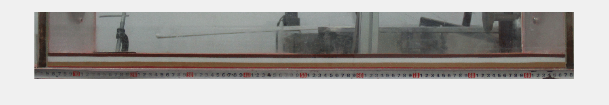
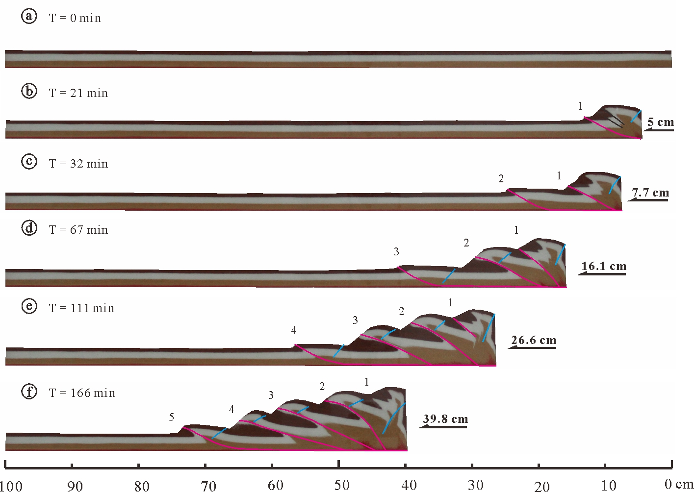

材料参数
| 实验材料 |
颗粒直径 d (μm) |
堆积密度 ρ (kg∙m-3) |
粘聚力 Co(Pa) |
内摩擦角 φ(°) |
缩短速率 υ (mm∙min-1) |
|---|---|---|---|---|---|
| 石英砂 | 200~400 | 1300 | ~35 | 50-100 | 2.4 |
试验过程及结果
初始模型长100 cm，宽30 cm，高 3 cm。在水平砂箱底部铺上3毫米厚的玻璃微珠作为底部滑脱层，上覆2.7厘米厚的水平石英砂层。实验的变形过程由数码相机定时拍摄并保存，拍摄时间间隔为1分钟。最后实验结束后，砂箱模型被喷洒上水至饱和，然后沿挤压方向进行切片获得模型内部的构造形态信息。

简单挤压试验构造演化过程
图中阿拉伯数字代表断层形成的相对次序，每个阶段照片顶部带箭头粉色线条标示变形带的宽度，而箭头表示变形的传递方向。
参考文献
- 孙闯. 2017. 龙门山褶皱冲断带构造物理模拟研究. 博士论文. 南京大学.
- Sun C, Jia D, Yin H, et al. 2016. Sandbox Modeling of Evolving Thrust Wedges with Different Preexisting Topographic Relief: Implications for the Longmen Shan Thrust Belt, Eastern Tibet. Journal of Geophysical Research: Solid Earth.